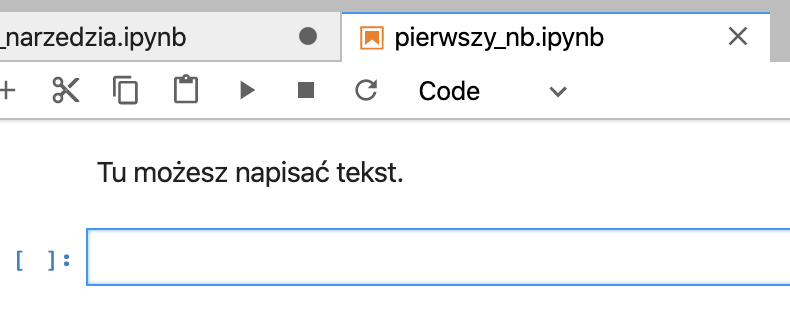

    <main class="jupyter-page">
    <div class="jb_cell">

<div class="cell border-box-sizing text_cell rendered"><div class="inner_cell">
<div class="text_cell_render border-box-sizing rendered_html">
<h1 id="Narz&#281;dzia">Narz&#281;dzia<a class="anchor-link" href="#Narz&#281;dzia"> </a></h1><h2 id="JupyterLab">JupyterLab<a class="anchor-link" href="#JupyterLab"> </a></h2><p>Na naszych zajęciach będziemy używać jednego programu - JupyterLab. Jest to interaktywne środowisko programistyczne, działające wewnątrz przeglądarki internetowej, i pozwalające m.in. na tworzenie <em>Jupyter Notebooks</em> - dokumentów zawierających kod programistyczny w języku Python... I jeśli powyższe zdanie jest dla Ciebie niezrozumiałe to nic takiego - mam nadzieję, że już niedługo wszystko będzie jasne.</p>
<h2 id="Instalacja">Instalacja<a class="anchor-link" href="#Instalacja"> </a></h2><blockquote><p>Uwaga! Do pracy z JupyterLab polecam stosować przeglądarkę Chrome, Firefox bądź Safari (MacOS). Używanie bardziej egzotycznych przeglądarek może powodować niespodziewane rezultaty.</p>
</blockquote>
<h3 id="Lokalnie">Lokalnie<a class="anchor-link" href="#Lokalnie"> </a></h3><p>Aby w prosty sposób uzyskać stabilne i dobrze "wyposażone" środowisko programistyczne, najlepiej jest zainstalować <a href="https://www.anaconda.com/distribution/">Anaconda Distribution</a>. Wybierz wersję Python 3.x żeby uzyskać dostęp do aktualnego Pythona. Proces instalacji dla różnych systemów operacyjnych opisany jest szczegółowo tutaj: <a href="http://docs.anaconda.com/anaconda/install/">http://docs.anaconda.com/anaconda/install/</a>. Po zainstalowaniu należy uruchomić aplikację Anaconda Navigator, i stamtąd wybrać JupyterLab.</p>
<p>Uwaga! Anaconda Distribution to duży i wymagający pakiet oprogramowania. Aby wszystko dobrze działało potrzebujesz ok. 3GB wolnego miejsca na dysku i w miarę szybki komputer. Pamiętaj aby zainstalować aktualizacje systemu operacyjnego!.</p>
<h3 id="Zdalnie">Zdalnie<a class="anchor-link" href="#Zdalnie"> </a></h3><p>Jeszcze prostszym sposobem na dostęp do gotowego, skonfigurowanego środowiska programistycznego jest skorzystanie z jednego z serwisów online. Dobrze sprawdza się na przykład serwis <a href="http://notebooks.ai">http://notebooks.ai</a>. Po założeniu darmowego konta uzyskujemy 1GB miejsca na serwerze na projekty wykorzystujące JupyterLab, Pythona i kilka najbardziej popularnych modułów.</p>
<h2 id="JupyterLab---przegl&#261;d-interfejsu">JupyterLab - przegl&#261;d interfejsu<a class="anchor-link" href="#JupyterLab---przegl&#261;d-interfejsu"> </a></h2><p>Po zainstalowaniu i uruchomieniu JupyterLab Twoim oczom powinien ukazać się widok podobny do poniższego.</p>
<p></p>
<p>W górnej części okna widzimy klasyczne menu, ze znanymi z innych programów pozycjami <code>File</code>, <code>Edit</code> czy <code>Help</code>. Z lewej widzimy boczny panel, który zawiera bardzo ważny element - <strong>przeglądarkę plików</strong> (file browser). Służy ona do przeglądania, otwierania, kopiowania, zmieniania nazw plików. Powyżej okna przeglądarki znajdują się przyciski, które będą przydatne. Są to w kolejności:</p>
<ul>
<li><em>New Launcher</em>: otwiera kartę <em>launcher</em>, służącą do tworzenia nowych kart</li>
<li><em>New folder</em>: tworzy nowy folder</li>
<li><em>Upload files</em>: pozwala dodawać do bierzącego folderu nowe pliki przy użyciu interfejsu przeglądarki</li>
<li><em>Refresh file list</em>: odświeża listę plików w przeglądarce (przydatne, gdy np. nasz program tworzy nowe pliki)</li>
</ul>
<p>Poniżej tych przycisków widzimy <strong>ścieżkę dostępu</strong> do aktualnie wybranego folderu.</p>
<p>Pamiętaj, że przytrzymanie kursora kilka sekund nad jakimś elementem interfejsu spowoduje wyświetlenie podpowiedzi.</p>
<p></p>
<h3 id="Launcher-i-karty">Launcher i karty<a class="anchor-link" href="#Launcher-i-karty"> </a></h3><p>Launcher jest kartą, która służy do tworzenia nowych kart. Możemy za jego pomocą utworzyć nowy <em>notebook</em> (o czym zaraz). Możemy też utworzyć nową konsolę (<em>Console - Python 3</em>), okno terminala (<em>Terminal</em>) bądź plik tekstowy (<em>Text file</em>). Kliknięcie na dowolny przycisk w launcherze powoduje utworzenie nowej karty z daną zawartością. Karty można dowolnie przesuwać i ustawiać wewnątrz interfejsu, poprzez przeciąganie ich tytułów w rożne miejsca. Poniższy przykład pokazuje jedno z możliwych ustawień interfejsu.</p>
<p></p>
<h3 id="Pierwszy-notebook">Pierwszy notebook<a class="anchor-link" href="#Pierwszy-notebook"> </a></h3><p>Jupyter Notebook do dokument, który składa się z komórek (<em>cells</em>), przechowywujących różne rodzaje danych, tj:</p>
<ul>
<li>Tekst (wykorzystując <a href="https://en.wikipedia.org/wiki/Markdown">Markdown</a>, o czym zaraz)</li>
<li>Kod w różnych językach programowania (m.in. w Pythonie)</li>
<li>Wyniki działania tego kodu</li>
<li>Grafiki, wzory matematyczne</li>
<li>Media (audio/video)</li>
</ul>
<p>Notebooki mają rozszerzenie <code>.ipynb</code> (skrót od <em>IPython Notebook</em>, dawnej nazwy Jupytera) i tworzone są przy pomocy JupyterLab. Stanowią bardzo proste i poręczne narzędzie do <a href="https://en.wikipedia.org/wiki/Interactive_computing">programowania interaktywnego</a>. Znajdują wykorzystanie głównie w raportowaniu wyników badań naukowych (m.in. były wykorzystane przez naukowców z LIGO, odkrywców <a href="https://www.gw-openscience.org/GW150914data/GW150914_tutorial.html">fal grawitacyjnych</a> ). Więcej przykładowych notebooków można znaleźć <a href="https://nbviewer.jupyter.org">tutaj</a> lub <a href="https://github.com/jupyter/jupyter/wiki/A-gallery-of-interesting-Jupyter-Notebooks">tutaj</a>. Tworzone są rozbudowane kursy a nawet książki, będące <em>de facto</em> kolekcjami notebooków (np. <a href="http://introtopython.org">darmowy kurs Pythona</a>, <a href="https://www.textbook.ds100.org/intro">podręcznik Principles and Techniques of Data Science</a>.</p>
<p>Utwórzmy nasz pierwszy Jupyter Notebook. W launcherze wybierz przycisk <code>Python 3</code> (w sekcji <code>Notebook</code>):</p>
<p></p>
<p>W nowej karcie otworzy się pusty notebook, zatytułowany <code>Untitled.ipynb</code>. Pojawi się też nowy element w przeglądarce po lewej stronie - JupyterLab utworzył nam nowy plik. Najpierwsz zmieńmy jego nazwę. Naciśnij <strong>prawym</strong> przyciskiem myszy na <code>Untitled.ipynb</code> w przeglądarce - pojawi się menu kontekstowe, z którego wybierz <code>Rename</code>. W okienku wpisz nową nazwę, np. <code>pierwszy_nb.ipynb</code>.</p>
<p>Teraz wprowadźmy zawartość. W naszym notebooku jak na razie jest jedna, pusta komórka (<em>cell</em>). Dodatkowo, jest ona typu <code>Code</code> (służy do wprowadzania kodu programistycznego). Wiemy o tym, ponieważ po jej lewej stronie znajduje się symbol <code>[ ]:</code>, zaś w pasku narzędzi powyżej napisane jest <code>Code</code>. Naciśnij na ten napis a pojawi się lista rozwijalna. Z tej listy wybierz <code>Markdown</code>. Symbol <code>[ ]:</code> zniknie a Ty możesz napisać w komórce dowolny tekst. Po wpisaniu tekstu naciśnij kombinację klawiszy SHIFT + ENTER. <em>Voila!</em> Komórka wyświetliła prosty napis. Całość powinna wyglądać jakoś tak:</p>
<p></p>

</div>
</div>
</div>
</div>

 


    </main>
    